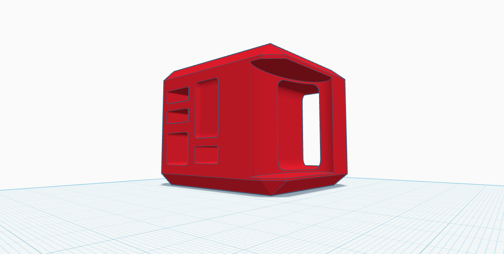

3D Projects



BOOKNOOK
The general concept behind the BookNook design is to create a fun, elevated children’s bookshelf that combines comfort, creativity, and organization into a single playful structure. The design functions as a miniature children’s library, where books and pillows can be arranged together to encourage reading, relaxation, and imaginative play. The goal was to make a bookshelf feel less like ordinary furniture and more like an interactive space for children.

STAMP
The following 3D prints focus on elevated product design and branding for unique creations. The intention behind the “Trademark” stamp is to allow the word “Trademark” to be replaced with any brand name, creating a customizable stamp that can mark products in a minimalist and non-invasive way.